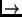

Next: Booting the Installation System Up: Getting Started Previous: Partitioning Your Hard Drive Contents Index
First, choose the boot media for the installation system. Next, choose the method you will use to install the base system.
To boot the installation system, you have the following choices: bootable CD-ROM, floppies, or a non-Linux boot loader.
CD-ROM booting is one of the easiest ways to install. Not all machines can boot
directly from the CD-ROM so you may still need to use floppies. Booting from
floppies is supported for most platforms. Floppy booting is described in section
2.4.2 on page ![[*]](crossref.png) .
.
If your system supports booting from a CD-ROM, you don't need any floppies. Put the CD-ROM into the drive, turn your computer off, and then turn it back on. You should see a Welcome screen with a boot prompt at the bottom. Now you can skip down to section 2.5.
If your computer didn't ``see'' the Debian CD-ROM, the easiest option is to make two floppies for booting (described in section 2.4.2) and then use them to start Debian. Don't worry; after Debian is finished with those two floppies, it will find your CD-ROM with no trouble.
It's not hard at all to boot from floppies. In fact, your CD-ROM contains all the information necessary to create boot disks for you. For these instructions, you will need to get two disks. Label the first one ``Debian 2.1 Install/Rescue Disk'' and the second ``Debian 2.1 Modules/Drivers Disk.''
Disk images are files containing the complete contents of a floppy disk in raw form. Disk images, such as resc1440.bin, cannot simply be copied to floppy drives. A special program is used to write the image files to floppy disk in raw mode.
First, you need to get to a DOS prompt. In Windows 95 and above, you can do this by double-clicking on an MS-DOS icon or by going to StartProgramsMS-DOS prompt. Then, insert your Debian GNU/Linux CD-ROM into your CD-ROM drive. First, you change to your CD-ROM drive. In most cases, this is D:.
\DISTS\SLINK\MAIN\DISKS-I386\2.1.8-1999-02-22
Now, you're ready to create the first of two disks. Start the program to write them out, rawrite2:
2.1.8-1999-02-22>rawrite2
RaWrite 2.0 - Write disk file to
raw floppy diskette
Enter target diskette drive: a:
drive A: and press -ENTER- :
2.1.8-1999-02-22>rawrite2
RaWrite 2.0 - Write disk file to
raw floppy diskette
Enter disk image source file name: drv1440.bin
Enter target diskette drive: a:
Please insert a formatted diskette into
drive A: and press -ENTER- :
You are now ready to boot into Debian! Shut down your existing operating system, turn off your computer, and place the Install/Rescue Disk into the floppy drive. Now turn your computer back on. You should get a Welcome screen with a boot prompt at the bottom.